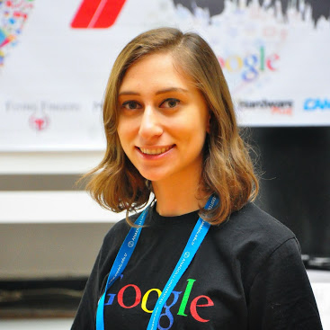

<div class="container">
	<div class="row">
        <div id="speaker-detail" class="col-lg-8 col-lg-offset-3">
            <div class="row">
            	<button title="Close (Esc)" type="button" class="mfp-close">×</button>
                
                <div class="col-md-4 col-lg-4">
                    <br />
                </div>
                    
                <div class="col-md-8 col-lg-8">
                    <h2>Gizem Fitöz</h2>
                    <h3>Mobil Geliştirme</h3>
                    <p>Anadolu Üniversitesi Bilgisayar Mühendisliği bölümünde öğrenci. Google Developer Group Eskişehir co-organizer'larından. 2014'te kurulan Women Techmakers Eskişehir topluluğunun co-organizer'larından. Bilgisayar Kulübü yönetiminde yer alıyor. Bir süredir Java ve C dilleri ile ilgiledikten sonra iOS geliştirmeye başladı.</p>
                     <p><a href="/sunumlar/wtm-android-vs-ios.pdf" target="_blank"><i class="fa fa-toggle-right"></i> Mobil Geliştirme Sunumu</a></p>
                </div>
                            
            </div>
        </div>
    </div>
</div>